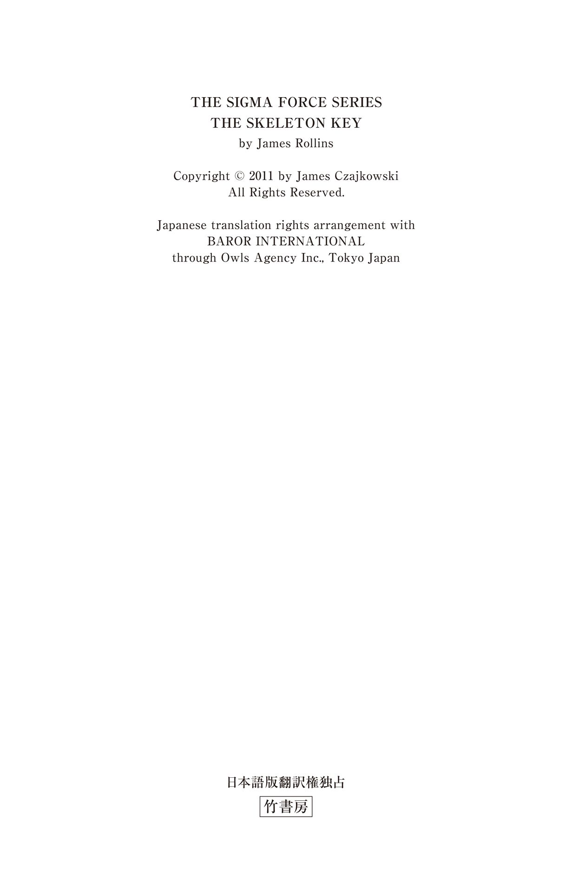

| 〈シグマフォース・シリーズ5.5〉セイチャンの首輪 シグマフォースシリーズ | |
| ジェームズ・ロリンズ | |
| (2015) | |
この作品は縦書きでレイアウトされています。
また、ご覧になる機種により、表示の差異が認められることがあります。
一部の漢字が簡略字で表示されていることがあります。


シグマフォース・シリーズ⑥『ジェファーソンの密約』で、セイチャンはギルドの起源に関する手がかりをグレイに提供する。だが、セイチャンがどこで、誰から、どのようにして、その手がかりを入手したかについては、詳しく説明されていなかった。グレイが知っていたのは、セイチャンがフランスにいたらしいということだけ。グレイが気づいたのは、セイチャンの右耳の下に小さな傷跡があったことだけ。
彼女はフランスでどんな事件に巻き込まれたのか？ その答えは、光の都パリにあった。
主な登場人物
セイチャン .........ギルドの元工作員
レニー・マクラウド .........スコットランド人の少年
クロード・ボープレ .........フランスの歴史学者
喉元に突きつけられたナイフの感触で目が覚める。
少なくとも、そんな気がした。
セイチャンは完全に覚 醒 していたが、目を閉じたまま待った。とがったものが首筋に食い込むのを感じたが、眠っているふりをする。本能的に、動いてはいけないと悟ったからだ。少なくとも、まだ動いてはいけない。周囲を警戒しながら、セイチャンは五感を研ぎ澄ました。けれども、何かが動く音は聞こえない。むき出しの肌の上の空気が揺れる気配もない。他人の体臭も息遣いもない。かすかにバラの花の香りと消毒剤のにおいがするだけだ。
〈自分だけしかいないのか？〉
首筋への鋭い圧迫感を意識しながら、セイチャンは片目を開き、瞬時に周囲の状況を確認した。知らないベッドの上で仰向けになっている。室内にも見覚えはない。ベッドカバーはきめ細やかな織りのブロケードで、ヘッドボードの上には古いタペストリーが掛かっている。暖炉のマントルピースの上には、バラの切り花を挿したクリスタルの花瓶と、厚い大理石の台座を持つ十八世紀の金時計が並んでいた。時計の針は十時を少し回ったところだ。クルミ材のナイトテーブルに置かれたラジオ付きのデジタル時計も、同じ数字を示している。薄いカーテン越しにやわらかな太陽の光が差し込んでいるから、午前中のはずだ。
セイチャンの耳はこもった話し声をとらえた──フランス語。室内の装飾品や調度品もフランス風だ。声は部屋の外の廊下を通り過ぎていく。
〈ホテルの部屋〉セイチャンは推測した。
豪華で高級なホテルだ。自分が宿泊費を支払えるような場所ではない。
セイチャンはさらに数呼吸待ち、ほかに誰もいないことを確認した。
子供の頃、セイチャンは通りで生活する野生児で、バンコクのスラム街やプノンペンの裏通りを走り回りながら過ごした。今の職種に不可欠な能力は、あの当時に習得したものだ。ストリートチルドレンとして生きていくためには、注意力と、狡 猾 さと、無慈悲さが必要とされる。かつての雇い主に見出され、通りから組織に取り込まれた時、ごく自然に暗殺者へと生まれ変わることができた。
それから十二年後、セイチャンはさらに別の顔を持っている。だが、その変化にあらがおうとしている自分もいる。新しい形は完成しているのに、粘土がまだやわらかいままで、固まるのを待っている、そんな気分だ。けれども、粘土が固まったら自分は何になるのだろうか？ セイチャンはかつての雇い主を裏切った。国際的な犯罪組織で、ギルドと呼ばれるグループだ──ただし、それはあくまで便宜上の呼び名で、正式な名称ではない。ギルドの正体と真の目的に関しては、所属する工作員たちにも明らかにされていない。
組織を裏切ったセイチャンには、拠り所も国籍もない。あるのはアメリカの秘密特殊部隊シグマに対するわずかな忠誠心だけだ。ギルドを操る真の指導者を突き止めるために、セイチャンはシグマにスカウトされた。ほかに選択肢がいくつもあるわけではない。自分が始末される前に、かつての雇い主を滅ぼさなければならないからだ。
セイチャンがパリを訪れた目的はそこにある。手がかりを探すため。
セイチャンはゆっくりと体を起こし、ワードローブの鏡に映る自分の姿を眺めた。枕に押しつけられていた黒髪はぼさぼさだ。エメラルドグリーンの瞳は焦点が定まっておらず、朝の弱い光すらもまぶしく感じる。
〈薬を盛られた〉
服は脱がされ、ブラジャーとショーツしか身に着けていない。武器や盗聴器を隠し持っていないか、身体検査をされたのだろう。あるいは、単に恐怖心を植えつけようという目的だったのかもしれない。黒のジーンズ、グレーのＴシャツ、レザーのバイクジャケットは、ベッド脇にあるアンティークのルイ十五世様式のアームチェアの上にきれいにたたんで置いてある。アンピール様式のテーブルの上には、その危険さを嘲 笑うかのように、セイチャンの武器が整然と並べられていた。シグ・ザウエルはショルダーホルスターに収められたままだが、短剣やコンバットナイフは鞘 から取り出されていた。光を反射した刃の輝きが目にまぶしい。
光り輝いているのは、首に巻き付けられた見慣れない装飾品も同じだ。
ステンレス製のバンドが首にきつく固定されていた。小さな緑色のＬＥＤライトが喉の付け根で輝いており、その真下では鋭い突起物が皮膚に深く食い込んでいる。
〈このせいで目が覚めたというわけね......〉
セイチャンは電子ネックレスに手を伸ばし、この器具を固定する仕掛けを探しながら、指先で慎重に表面をなぞった。右耳の下あたりに、ピンが入る程度の大きさの微小な穴がある。
鍵穴だ。
〈だが、誰が鍵を持っているのか？〉
心臓が大きく鼓動を打つたびに、喉元の突起が皮膚を圧迫する。怒りが湧き上がると同時に、セイチャンは背骨の付け根に冷たい恐怖を感じた。首輪の下に指を突っ込む。首が締め付けられ、鋼鉄の突起がさらに深く食い込み──
──セイチャンの全身を苦痛が貫いた。骨が焼けるように熱い。
セイチャンはベッドに倒れ込んだ。痛みに身をよじり、背中をそらすものの、胸が苦しくて悲鳴をあげることすらできない......目の前が暗くなる......意識を失う......
意識を取り戻し、セイチャンは安 堵 感に包まれたが、いつまでも安心していられない。
目を開くと、口の中に血の味がする。舌を嚙んでしまったようだ。うつろな目でマントルピースの上の時計を確認すると、気を失っていたのはほんの一瞬らしい。
感電のショックで体の震えが治まらないまま、セイチャンは再び体を起こし、足を床に下ろした。手を首に近づけないように注意しながら、居場所を確認するために窓へと歩み寄る。影が映らないように窓の横に立つと、セイチャンはカーテンの隙間から外の様子をうかがった。窓の下には広場があり、その中央にある見上げるような高さのブロンズ製の円柱の上にはナポレオンの像が見える。広場の周囲を取り囲む優雅な建物は、一階部分のアーチ状のアーケードや二階分の高さのある背の高い窓など、いずれも同じ造りをしており、装飾の施された柱やピラスターで区切られている。
〈まだパリにいる......〉
セイチャンは室内へと戻った。自分の居場所を正確につかむことができた。今朝早く、まだ街が目覚め始めた頃に、あの広場を横切ったばかりだ。窓の下にあるのは、高級な宝石店やブティックで知られるヴァンドーム広場。中央にあるブロンズ製のヴァンドームの円柱はパリのランドマークで、戦勝の記念としてナポレオンが奪ったロシアとオーストリアの千二百門の大砲を融かして製造された。円柱の表面にはナポレオンによる戦争の場面を描いた浅浮き彫りが、下から上へと螺 旋 状に連なっている。
セイチャンは振り返り、豪 奢 な室内を観察した。シルクと金箔がふんだんに使用されている。
〈まだリッツの中にいるに違いない〉
セイチャンがこのホテル──リッツ・パリに来たのは、ギルドと接点のある歴史学者と朝早くに会うためだった。組織内部で何か大きなことが持ち上がったらしく、セイチャンがコネを持つ相手の全員が動揺していた。このような騒動が起きた時には、えてして鍵のかかっているはずの扉が一時的に開け放たれたり、厳重な警戒が緩んだりする。情報を入手する絶好の機会だ。そのため、セイチャンは深く探りを入れ、強気に出て、正体を明かしかねない危険も冒した。
片手でそっと首輪に触れる──すぐに手を下ろす。
どうやら強引にやりすぎたようだ。
歴史学者との対面をお膳立てしたのは、信頼を置いていた接触相手だった。しかし、金で買うことのできる信頼には限界があると見える。歴史学者とはホテルの階下にあるヘミングウェイ・バーで会った。常連だったアメリカ人の文豪に敬意を表して改名したバーで、木製の羽目板とレザーの調度品が使用されている。歴史学者はこのバーが発祥と言われるブラッディ・マリーのグラスを手に、隅のテーブルに座っていた。椅子の横に置かれた黒い革製のアタッシュケースには、今まで明かされたことのない秘密が収められているはずだった。
セイチャンはバーで飲み物を口にした。
飲んだのは水だけだ。
気をつけていたのに。
今もまだ、口の中に違和感があり、頭もどこかもやもやする。
立ち上がって歩き始めたセイチャンは、低いうめき声を耳にした。バスルームの扉の奥からだ。最初に目が覚めた時、ほかの部屋を徹底的に調べなかった自分を責める。思考力が鈍っていたせいだ。
だが、この先はそんな不注意は許されない。
セイチャンはテーブルの上から拳銃の入ったホルスターをつかみ、音を立てずに素早く室内を横切った。バスルームの扉の手前に達すると、拳銃を取り出す。ショルダーホルスターが絨 毯 の上に音もなく落ちる。
セイチャンは扉に聞き耳を立てた。さっきよりも苦しそうなうめき声が聞こえた瞬間、セイチャンは拳銃を構えながらバスルームへと飛び込んだ。大理石を使った小ぢんまりとした室内を見回すが、洗面台にも便器にも人影はない。
その時、びっしりと刺青 の彫られた一本の骨ばった腕が、浴槽の中から姿を現した。弱々しく動くその腕は、まるで溺れかけている人が助けを求めているかのようだ。ハクチョウをかたどった金の蛇口を、指がしっかりとつかむ。
セイチャンが浴槽に近づくと、鳶 色の髪の瘦せた少年が、蛇口をつかんだ手を支えにして浴槽から這い出てきた。まだ十八歳にも満たないだろうか。瘦せこけているために肋骨と肘と膝が浮き出ている。けれども、セイチャンは警戒を緩めなかった。銃口を少年の裸の胸に向ける。ぼんやりとした表情を浮かべていた少年が、ようやくセイチャンの存在に気づいた。目を大きく見開く。目の前に半裸の女性がいることと、武器を突きつけられていることの両方に驚いている。少年は両手を上げてお湯の入っていない浴槽の中へと戻った。そのあわてぶりからすると、後ろの大理石の壁をよじ登らんばかりの勢いだ。
少年が身に着けているのはボクサーパンツだけだ──それと、ステンレス製の首輪。
自分と同じ首輪だ。
セイチャンと同じように首への圧迫感を覚えたのか、少年は喉を指で引っかこうとした。
「やめな」セイチャンはフランス語で警告した。
怯 えた少年は首輪を引っ張った。緑色の光が赤に変わる。少年の全身が震え、床から三十センチほど体が浮き上がった。そのまま浴槽の中へと落下する。セイチャンは素早く前に踏み出し、少年の頭がかたい大理石に激突しないように手で支えた。手のひらを通じて電気が伝わってくる。
セイチャンの行動は少年を救おうとしたからではない。この少年は同じ境遇にある。自分よりも事情を知っているかもしれない。さらに数秒間、痙 攣 が続いた後、少年の体から力が抜けた。セイチャンは少年の目が再び開くのを確認してから、手を離して立ち上がり、後ずさりした。拳銃を下ろす。少年に脅威はないと判断したからだ。
少年は慎重に体を起こし、浴槽内に座った。激しく息をつきながら、ショックを振り払おうとしている。最初に思ったよりも背が高い。一メートル八十センチはあるだろうか。体は針金のように細い。ただし、がりがりに瘦せているわけではなく、少しは鍛えているようだ。髪を肩まで垂らし、先端を不揃いに切っている。若者らしくお洒落を気にしているのだろう。両腕の刺青は肩に、さらには背中にまで、まるで二枚の黒い翼のように広がっている。胸のキャンバスにはまだ何も描き込まれていない。
「コマン・チュ・タペル？」セイチャンは便器に腰を下ろして名前を訊ねた。
少年の息遣いは荒いままだ。「ジュ・マペル・レニー......レニー・マクラウド」
少年の答えはフランス語だったが、スコットランド訛 りがある。
「英語は話せる？」セイチャンは訊ねた。
少年はほっとした様子でうなずいた。「うん。いったいどうなっているの？ ここはどこ？」
「トラブルに巻き込まれたのよ」
困惑と怯えの表情が浮かぶ。
「最後に覚えているのは？」セイチャンは訊ねた。
少年の声からはまだショックが抜け切れていない。「パブにいたんだ。モンパルナスの。誰かがビールを一パイント、おごってくれた。一杯だけ。薬とかは打たれていないけど、覚えているのはそれが最後。目が覚めたらここにいたんだ」
この少年も薬を飲まされたに違いない。自分と同じように、ここへと連れてこられて、首輪をはめられたのだ。しかし、いったいなぜ？ どういう状況なのか？
電話の呼び出し音が室内に鳴り響いた。
セイチャンは振り返った。疑問に対する答えが間もなく明らかにされるに違いない。立ち上がり、バスルームを出る。後ろから大理石のタイルを叩く足音が聞こえる。レニーがついてきているのだろう。セイチャンはナイトテーブルの上の電話を取った。
「二人とも目が覚めたようだな」相手の声は英語だ。「よかった。時間はあまり残されていないのでね」
セイチャンはその声に聞き覚えがあった。ドクター・クロード・ボープレ。パリ第一大学の歴史学者だ。澄ました顔をした白髪のフランス人男性の顔が脳裏によみがえる。ヘミングウェイ・バーで出会った相手だ。着古したツイードのジャケット姿だったが、男の真の姿はその身なりにではなく、貴族然とした雰囲気や物腰から漂うどこか横柄な態度に現れていた。かつて彼の先祖は、侯爵、子爵、男爵といった高貴な称号を名乗っていたのだろう。しかし、今は違う。彼が歴史学者になったのは、それが理由なのかもしれない。一族の過去の輝かしい歴史にしがみつこうとしているのだ。
今朝、セイチャンが彼と会った目的は、ギルドの真の指導者に関連する文書を買い取るためだった。だが、どうやら事情が変わったらしい。
〈あの男はこっちの正体に気づいたのだろうか？ そうだとしたら、どうして私はまだ殺されていないのか？〉
「君にしかない才能を見込んで頼みがある」セイチャンの心の声が聞こえたかのように、クロードは切り出した。「君をパリへとおびき出すのに、答えをちらつかせて誘い出すのに、かなり苦労したよ。危うく間に合わないところだった」
「つまり、すべて罠 だったというわけね」
「いいや 。そうではないよ、お嬢さん。君が探し求める文書は持っている。君が手に入れようとしている文書を持ち出すために、我が組織を揺るがしている混乱を利用させてもらった。その意味では、君と私は同じだな──もっとも、君の場合はかつての雇い主、私の場合は今の雇い主という関係だが。ともかく、私は約束を守る男だ。君は文書を買い取りにきた。私はその価格を交渉しているだけだ」
「あんたの言う価格とは？」
「私の息子を探してほしい。殺される前に助け出してもらいたいのだ」
セイチャンは交渉内容をすぐに理解することができなかった。「あんたの息子？」
「ガブリエル・ボープレだ。息子は我が組織に所属するある人物に心酔してしまっている。私が最も忌み嫌う相手でね。その男は終末思想のカルト教団、ロードル・デュ・タンプル・ソレールの教祖だ」
「太陽寺院」セイチャンはフランス語を訳した。
その名前を耳にして、レニー・マクラウドの表情がこわばる。
「そうだ 」クロードの声が答える。「十年以上前のことだが、スイスの二つの村とカナダのケベック州の村での集団自殺に、この教団が関与していた。信者は自らの手で服毒したか、あるいは薬物で朦 朧 とした状態の時に毒を飲まされたということだ。そのうちの一カ所は、最後の清めの儀式のために火をかけて燃やされている。その事件の後、太陽寺院は解散したと考えられていた──だが、実は彼らは地下深く潜行し、別の組織に仕えることになったのだ」
〈ギルドだ〉
ギルドがよく使う手口の一つとして、そうした狂気を抑えつつ、自分たちの目的に合わせた過激な行動へと駆り立てることがあげられる。
「しかし、太陽寺院の新しい教祖リュック・ヴェナールは、より大きな野望を抱いている。我々と同じように、彼もギルドの手 綱 が緩んだ隙をついて、組織からの独立を目 論 んでいる。私が愛するこの街を混乱に陥れようとしているのだよ。それだけをとっても彼を阻止しなければならない十分な理由になるのだが、あいつはテンプル騎士団が今も存続しているという作り話で息子を巧みに勧誘し、教団の聖なる使命は新たな神王が統治する時代を呼び込むことだと信じ込ませた。その神王というのは、どうせヴェナール自身のことに決まっている。そのための血の肅 清 には、炎と生 贄 が必要なのだという。もちろん、人間の生贄のことだ。行方不明になる前の息子の言葉を借りれば、『大いなる肅清』が新たな太陽王の誕生の前触れとなるのだそうだ」
「それが起こるのはいつだというの？」セイチャンは訊ねた。
「今日の正午、太陽が最も高い位置に昇る時だ」
セイチャンはマントルピースの上の時計を見た。あと二時間もない。
「だから私は少々過激なやり方を用いることにした。確実に君の協力を取りつけるためだ。その首輪は罰を与えるだけではなく、君の命を奪うこともできる。パリ市内から一歩でも外に出れば、君は苦しみのたうちながら死ぬことになる。私の息子を助け出すことに失敗しても、同じ運命が待っている」
「同意した場合は......成功したら......」
「晴れて自由の身だ。それは約束する。あと、力を貸してくれたお礼として、私の所有する文書は君のものとなる」
セイチャンは選択肢を検討した。ほとんど時間はかからない。一つしかないからだ。
〈協力するしかない〉
クロード・ボープレが自分に首輪を付け、猟犬として放つ理由もセイチャンは理解していた。息子から得た情報をギルドに伝えることはできないからだ。情報を知らされても、ギルドはヴェナールに計画を実行させ、その結果を自分たちに都合のいいように利用するに決まっている。セイチャンのかつての雇い主にとって、混乱は好機でしかないのだ。あるいは、不服従と反抗を理由に、ヴェナールと彼の教団を殲 滅 するかもしれない。いずれの場合も、ガブリエル・ボープレの命はない。
だからクロードは通常のルートとは別のところに活路を求めたのだ。
「この少年は何なの？」セイチャンはレニー・マクラウドを見ながら訊ねた。このピースがパズルのどこに当てはまるのかがわからない。
「彼は君の地図兼ガイド役だ」
「意味がわからないわ」
セイチャンの鋭い視線に気づき、レニーの顔から見る見るうちに血の気が引いていく。
「彼の背中を探したまえ」クロードは指示した。「ジョリエンヌについて聞いてみるといい」
「ジョリエンヌって誰？」
みぞおちに強烈なパンチを食らったかのように、少年がひるんだ。今度は顔面が紅潮する。レニーは飛びかかって電話の受話器をつかもうとした。
「こいつはジョリーの何を知っているんだ？」レニーは大声をあげた。
セイチャンは身軽な動きでレニーをかわし、片手で受話器を耳に当てたまま、もう片方の腕でレニーを突き飛ばした。ベッドの上にうつ伏せに倒れたレニーの背骨の付け根を片膝で押さえつけ、動けないようにする。
レニーはもがきながら激しく悪態をついている。
「じっとして」セイチャンは膝を深く食い込ませた。「ジョリーって誰なの？」
レニーは首をひねって顔を上げ、片目でセイチャンをにらみつけた。「僕のガールフレンドだ。二日前に行方不明になった。太陽寺院とかいう名のグループを探しに出かけたきり。昨日の夜、例のパブに行ったのは、カタフィルの仲間で捜索隊を編成しようと考えたからだ」
「カタフィル」が何のことだかわからない。さらに追及しようとしたセイチャンの目が、レニーの裸の背中に彫られた刺青に留まる。背中の刺青をちゃんと見たのはこれが初めてだ。
背中の皮膚には、黒、黄、深紅のインクで奇妙な地図が描かれている──だが、街路や通りの地図ではない。背中に記された精 緻 な地図では、交差する何本ものトンネル、広さのある空間、水たまりなどが複雑に絡み合っている。失われた地下の洞窟群の地図のようだ。しかも、どうやら未完成の作品らしい。刺青の端では、通路の先が曖 昧 に描かれていたり、不意に行き止まりになったりしている。
「これは何なの？」セイチャンは訊ねた。
レニーはセイチャンが何を目にしているのかに気づいた。「ジョリーが行方不明になった場所だよ」
電話口から聞こえたクロードの声が、より明確な答えを告げた。「カタコンブ・ドゥ・パリ、すなわち地下納骨堂の地図だ」
＊ ＊ ＊
十五分後、セイチャンはバイクのアクセルを全開にして、セーヌ川に架かる中世に建設された橋、ポンヌフの十二個の石のアーチ上を疾走していた。遅い車列の間を縫うようにバイクを走らせながらセーヌ川の左岸へと渡り、カルチエ・ラタンを目指す。
後ろに座るレニーは、セイチャンの体に両手を回してしっかりとつかまっている。橋を渡り終えたセイチャンが対岸の迷路のような路地へと急カーブを切ると、レニーの腕にいっそう力が込められる。セイチャンはスピードを緩めなかった。残された時間は刻一刻と少なくなっている。
「次の角を右に！」耳元でレニーが叫んだ。「そのまま四ブロック進んで。その先はバイクを降りなければならない」
セイチャンは指示に従った。ガイドの言葉だけが頼りだ。
それから間もなく、二人はムフタール通りを走っていた。歴史のある歩行者専用の狭い通りが、カルチエ・ラタンを貫いている。通りの両側の建物は、何世紀も前に建てられたものだ。一階部分はカフェ、パン屋、チーズ専門店、クレープ屋、生鮮食料品店などに改装され、商品が通りにまであふれている。商品を売り込む店員の声と、値段を交渉する買い物客の声で、どの店も活気にあふれていた。
メニューがいっぱいに書き込まれた黒板や、ウインドーの奥に積まれた大きなパンの塊を見ながら、セイチャンは喧 騒 の中を走り抜けた。息を切らして走りながら、小さなチーズ専門店から漂うくらくらするような香りや、花屋の店先に並んだ色とりどりの花の芳香を胸いっぱいに吸い込む。
その一方で、セイチャンはこのにぎやかな通りの下の 存在を強く意識していた。地下納骨堂にはパリ市民六百万人の遺骨が納められており、その人数は現在のパリの人口の三倍に相当する。
レニーは大股で走りながら先導していた。瘦せた体で人ごみをすいすいとかわして進んでいく。何度も振り返っては、セイチャンがちゃんと後についてきているか確認している。
レニーの服はホテルの室内のクローゼットに置かれていた。破れたジーンズ、アーミーブーツ、チェ・ゲバラの似顔絵が描かれた赤のＴシャツという格好だ。セイチャンもレニーも、金属製の首輪を隠すためにスカーフを巻いている。ホテルで服を着る間に、セイチャンは自分たちの置かれている状況を説明した。カタコンブを捜索し、行方不明になった歴史学者の息子を取り戻さなければ、二人の命はないと。レニーは説明を聞きながら、いくつかの質問をしただけだった。セイチャンはレニーの瞳に浮かぶ恐怖の片隅で、希望の光が輝いているのを見て取った。今、レニーが意を決した足取りで走っているのは、自分の命を救うことではなく、恋人のジョリーを見つけ出すことを第一に考えているからではないか、セイチャンはそんな気がした。
Ｔシャツを着る前に、レニーは腕をよじりながら右の肩甲骨の下を指差した。そのあたりは刺青の地図を彫ったばかりらしく、皮膚が赤く腫れ上がっていた。「ここはジョリーが発見した場所なんだ。彼女はここへ向かったきり、姿を消してしまった」
二人が向かっているのもそこだ。唯一の手がかりを追い求めて、レニーのガールフレンドの足跡をたどっている。
クロード・ボープレもジョリエンヌの居場所が重要だと考えていた。彼女が行方不明になった日は、クロードが息子を最後に見た日でもあるからだ。姿を消す前、ガブリエルは父に対して、ヴェナールと教団のほかの信者たちが肅清のために集まる計画を立てているとほのめかしていた。その場所がこのあたりだという。同じ界 隈 でレニーが行方不明になったガールフレンドを探しているという情報を聞きつけたクロードは、自分の持ち駒を手配した──若いガイドと優秀なハンターだ。
奇妙な絆で結ばれた二人は、カタコンブへの秘密の入口に向かっていた。地下に広がる墓地とトンネル網に関して、レニーは知っていることをすべて話してくれた。華やかな光の都の地下に眠る暗黒の世界が、以前は「レ・カリエール・ド・パリ」と呼ばれる古い採石場だったこと。過去の採掘現場は地下十階分に相当する深さがあり、いくつもの広大な地下室から延びるトンネル網は総延長が三百五十キロ以上にも及んでいること。かつて採石場は市の外れにあったが、時の経過とともにパリが都市として拡大し、古い地下の迷宮を覆い、今では市街地の半分がトンネル網の上に位置していること。
十八世紀、パリの市当局は満杯になった市の中心部の墓地を掘り返すように命じた。埋葬されてから数千年が経過したものも含めた何百万人分もの遺骨が、採石場のトンネルへと事務的に移され、薪 の山同然の扱いで朽ちるがままに放置された。レニーの説明によれば、メロヴィング朝の王クローヴィスからロベスピエールやマリー・アントワネットといったフランス革命期の人物に至るまで、フランスの歴史を彩る著名人が地下納骨堂に眠っているのだという。
けれども、セイチャンが探しているのは死者ではない。
ようやくレニーが表通りを離れ、カフェとケーキ屋との間の細い路地へと入った。「こっちだ。さっき僕が話した入口はこの先にある。友達──カタフィルの仲間たちが道具を残しておいてくれているはず。僕たちはいつも助け合っているから」
路地は幅が狭いため、一列になって進まなければならない。路地の先は築数百年はあろうかという建物に囲まれた中庭で行き止まりになっている。板でふさがれた窓もあるが、人々が暮らしている気配もある。小型犬の甲高い鳴き声が聞こえる。洗濯物を吊るしたロープが張られている。カーテンの隙間から外の様子をうかがう小さな顔が見える。
レニーは中庭の隅に隠れたマンホールへとセイチャンを案内した。ごみ箱の陰からバールと、鉱夫が使用するような前部にライトの付いたヘルメットを二個取り出す。
レニーはごみ箱を指差した。「懐中電灯も用意してくれているけど」
「あんたの仲間のカタフィルが？」
「うん。パリの地下を探検する仲間たちさ」レニーの口ぶりからは誇りのようなものが感じられる。スコットランド訛りが強くなる。「世界各地から、いろんな職業の人たちが集まってきているんだ。古い地下鉄や下水道を捜索する人もいれば、水たまりに潜ってその下にある水没した空間を探検する人もいる。けれども、ジョリーや僕を含めてほとんどの人は、カタコンブのまだ誰も足を踏み入れたことのない場所に魅力を感じているんだ」
レニーは口をつぐんだ。左右の肩に不安が重くのしかかっている。ガールフレンドの運命を気にしているのだろう。
「さあ、これを開けるわよ」セイチャンはガイド役を促した。
セイチャンはレニーに手を貸してマンホールをこじ開け、ふたを脇に転がした。シャフトの壁面に設置された金属製の梯子 が、地下の暗闇へと延びている。レニーはヘルメットを装着した。セイチャンは懐中電灯を選んだ。
暗がりに向けて懐中電灯の光を照らす。
「このマンホールは十九世紀半ばに造られた下水道に通じているんだけど、この一角はずいぶん昔に使用されなくなったんだ」そう言いながら、レニーは梯子を下り始めた。
「下水道なの？ 地下納骨堂に行くと思っていたんだけど」
「うん、そうだよ。下水道や地下室や古井戸などには、しばしば昔のカタコンブへの秘密の入口があるのさ。下りてきなよ。見せてあげるから」
レニーに続いてセイチャンも梯子を下りた。地上の生活排水のせいで、悪臭がひどいのではと覚悟していた。だが、湿気とかびくささがあるだけだ。地下二階分は下りたかと思った頃、ようやく足の裏がしっかりとした床をとらえた。光を周囲に向ける。モルタルで接合されたブロックが、下水道の壁面と低い天井を覆っている。通路の底には浅い流れがあるため、歩くと水音がする。
「こっちだ」レニーは迷路を学習したネズミのように、下水道を迷わず歩いていく。三十メートルほど進むと、右手に格子状のゲートでふさがれた入口がある。レニーはゲートを引っ張った。蝶 番 が耳障りな音を立てる。「ここを通り抜けないと」
石でできた粗末な階段を下ると、暗闇の先は部屋に通じている。セイチャンは息をのんだ。部屋の壁面には、花が咲き乱れて木々の生い茂る庭園が描かれており、細い流れや青々とした水をたたえた池もある。まるでモネの絵画の世界に飛び込んだかのようだ。
「カタコンブの本当の入口へようこそ」レニーが言った。
「誰がこの絵を描いたの？」セイチャンは懐中電灯の光で壁面を照らした。絵の上から落書きされている箇所もある。
レニーは肩をすくめた。「いろいろな人がここへと下りてくるから。芸術家もいれば、パーティーを楽しむだけの人もいるし、キノコを栽培する人だっている。数年前、カタフリックが──地下をパトロールする警官の僕たちの間での呼び名だけど、彼らが映画館を模した大きな地下室を発見したんだ。大きなスクリーンやポップコーンマシンがあって、石を彫って造った座席まであったらしい。でも、その翌日に警官たちが調査のために再び訪れると、何もかもなくなっていた。残されていたのは床の真ん中に置かれた一枚のメモだけで、そこには『我々を探そうとしてはならない』という警告が書かれていたんだって。パリの地下世界というのはそんなところさ。大部分はいまだに調査すらされていない。落盤で先に進めなかったり、時の経過とともに存在すら忘れ去られてしまったりしたためにね。僕や仲間たちのようなカタフィルは、古い地図上のそうした空白を埋めることを目標にしているんだ。自分たちの発見をたどり、どんなに細かいことでも記録に残すのさ」
「あんたの刺青がその方法の一つね」
「ジョリーのアイデアさ」レニーは悲しげな笑みを浮かべた。「彼女はタトゥーアーティストなんだ。すごく腕がよくてね。僕たちが一緒に行なった地下の探検を永遠に残しておきたいと考えたんだ」
再びレニーは口をつぐんだが、今度はすぐに話し始めた。
「ジョリーとは地下で初めて出会ったんだ。ここからそれほど遠くないところ。二人とも泥まみれだったよ。懐中電灯の光を使って電話番号を交換したんだ」
「彼女が行方不明になった日のことを話して」
「僕は授業に出ないといけなかった。彼女は午後、授業がなかったから、別の女の子と探検に出かけたんだ。ドイツから来たリーゼルという女の子。その子のフルネームは知らないなあ。謎の一団が地下をうろついているという噂を聞いて、二人は地下に向かったんだ」
「太陽寺院のことね」
「うん」レニーはＴシャツの背中をたくし上げた。「首の付け根のあたりに小さな花の模様の付いた部屋があるでしょ」
セイチャンは懐中電灯の光を当てながら顔を近づけた。小さなケルト文様のバラを見つけ、指先で触れる。
レニーは体を震わせた。「そこが今、僕たちのいるところ。これから刺青の地図の中でいちばん新しい地区へと向かう。ジョリーもそこを目指していた。地下迷路の忘れられていた部分への入口を発見したのは彼女なんだ。そこを詳しく調べようとしていた矢先に、太陽寺院の噂を聞きつけたんだよ」レニーはＴシャツの裾を下ろし、一本のトンネルを指差した。「道はほとんど暗記しているけど、目的地に近づいたら地図の助けが必要になるかも」
レニーは暗い迷路へと足を踏み出した。曲がりくねったトンネルを抜け、小さな部屋を横切り、水のたまった穴を迂 回 する。壁は石灰岩が露出していて、水が滴り落ちている。壁の表面には化石が点在していた。昔のカタフィルの手によって目立つようにきれいに磨かれている化石もあり、先史時代の過去が岩の間から這い出そうとしているかのように見える。
先へと進むにつれて、急速に気温が下がっていく。すぐにセイチャンの吐く息が白くなった。足音が壁面にこだまするため、ずっと誰かに後をつけられているかのような気がする。セイチャンは何度も立ち止まっては、背後を警戒して振り返った。
セイチャンはレニーがいらだちを募らせていることに気づいた。「こんなところには誰もいやしないよ。カタフリックもこんな外れた場所にはめったに来ないもの。それに観光客に公開されているカタコンブの近くでガス漏れが報告されたから、この三日間は閉鎖されているし」
セイチャンはうなずきながらレニーのＴシャツをまくり、刺青を調べた。描き込まれたばかりの地図からそれほど遠くない地点にいる。「この地図を正しく読み取れているとすれば、あんたのガールフレンドが新しく発見した場所は、あの通路沿いにあるはずよ」セイチャンは狭いトンネルを指差しながら、腕時計を確認した。
〈残り七十二分〉
不安を覚えつつ、今度はセイチャンが先に立った。刺青に記された分かれ道を探しながら、足早に進む。
「ストップ！」後ろからレニーが呼びかけた。
振り返ると、レニーはいくつもの石が転がった脇にひざまずいていた。石が崩れただけだろうと思って気にもとめていなかった場所だ。
レニーのヘルメットのランプが、石の上にピンク色のチョークで書かれた矢印を照らしている。「ここが入口だよ。ジョリーはいつもピンク色のチョークを使うんだ」
セイチャンはレニーのところまで戻った。石の陰に低いトンネルがある。
レニーは四つん這いになって隙間へと潜り込んだ。セイチャンも後に続く。段差を下りながら数メートル進むと、別のトンネルに通じていた。
セイチャンは立ち上がった。立 坑 や小さなトンネルがいくつもの方向に延びている。
レニーは湿った石灰岩の岩肌に手のひらを当てた。「ここはカタコンブの中でもかなり古い部分に間違いない。しかも、ここからの迷路は厄介そうだね」レニーは体をひねり、Ｔシャツの背中側を持ち上げようとした。「地図で調べて」
セイチャンはレニーの背中を見たが、刺青の地図はちょうど二人が立っている地点で途切れていた。分岐するトンネルの入口を調べてみたが、チョークによる手がかりが残されていないため、ジョリーがどこに向かったかはわからない。
この先は自分たちだけが頼りだ。
「どうする？」レニーが訊ねた。ガールフレンドの身を案じるあまり、声が震えている。「どこに行けばいいの？」
セイチャンは一本のトンネルを選んで先へと進んだ。
「どうしてこっちに向かうのさ？」レニーはあわてて後を追いながら訊ねた。
「どうしてこっちじゃだめなの？」
けれども、セイチャンにはこのトンネルを選んだ理由があった。下 へと向かっているトンネルはこれしかなかったからだ。これまでのルートを振り返ると、トンネル探検家たちは光の届かない暗い世界を目指している。この下には何があるのだろうという好奇心に駆られている。つまり、彼らは常に地下深くへと潜っていくのだ。最深部に達してから、捜索の範囲を外側へと広げている。
セイチャンはジョリーもその例に漏れないことを願った。
しかし、数歩も先に進まないうちに、セイチャンは自分の選択を後悔し始めた。トンネルの両側に設けられた深い壁 龕 に、古い人骨がびっしりと詰め込まれていたからだ。骨は古代の羊皮紙のように、黒ずんだ黄色に変色してしまっている。人骨は体の部分ごとに分割して置かれていた。商品を丁寧に仕分けして棚に陳列したかのようだ。ある壁龕には腕の骨だけが納められていて、一本ずつきれいに積み上げられている。別の壁龕には肋骨がいっぱいに詰まっていた。しかし、セイチャンが身の毛もよだつような思いをしたのは、通路の両側に一つずつ設けられた最後の二つの壁龕だった。両側の壁面には頭蓋骨が通路側を向いて並べられていた。うつろな眼 窩 はここを通り抜けようとする者に対して警告を与えているかのようだ。
背筋に寒気を覚えながら、セイチャンは足早に頭蓋骨の列の間を通り抜けた。
ようやくトンネルを抜けると、その先は広大な空間へと通じていた。天井の高さはトンネル部分とそれほど変わりはないが、アメリカンフットボールのフィールドがすっぽりと入るくらいの広さがある。何本もの石柱が天井を支えていて、まるで石でできた果樹園のようだ。それぞれの支柱は石の塊を一つ一つ積み上げて造られている。だが、傾いていて今にも倒壊しそうな柱もある。
「これはシャルル＝アクセル・ギヨモの手によるものだよ」レニーは不安げな調子の早口で説明した。「一七七四年にカタコンブの大きな崩落事故が起きて地上の街並みがのみ込まれ、大勢の人の命が失われた。その後、フランス国王が建築家のギヨモにカタコンブの修復を依頼したんだ。ギヨモがカタフィルの第一号だと言ってもいいかもしれない。彼はほとんどのトンネルを探検して地図を作成し、ここのような空間に柱を設置したんだよ。けれども、それで崩落事故が起こらなくなったわけじゃない。一九六一年にも地上に穴が開いてパリ市内の一画が陥没し、多くの死者を出した。今でも小規模な落盤事故は毎年のように発生している。地下はとても危険な場所なんだ」
だが、セイチャンはレニーの説明を半ばうわの空で聞いていた。一本の石柱の発した光が気になったからだ。このようなじめじめして陰 鬱 な場所に、今のような明るい光は不自然だ。セイチャンはその石柱へと近づいた。床と天井の中間くらいの位置にワイヤーが巻かれている。トランシーバーと雷管から伸びるワイヤーは、黄色がかった灰色をした拳大の粘土につながれていた。
Ｃ４爆薬だ。
これは十八世紀のフランス人建築家の手によるものではない。
セイチャンは手を触れないように注意しながら爆弾を調べた。トランシーバーの小さな赤いＬＥＤライトが、送られてくる信号を待っている。セイチャンは懐中電灯の光を手で覆い、レニーにもヘルメットのランプの光を漏らさないように合図した。
空間内が暗闇に包まれる。暗さに目が慣れてくると、セイチャンは室内のあちこちで同じような赤い光が輝いていることに気づいた。何百もの小さな光が、石柱上で点滅している。この空間全体に爆弾が仕掛けられているのだ。
「これはいったい何なの？」セイチャンの隣でレニーが小声でささやいた。
「ヴェナールの肅清よ」セイチャンは人々でにぎわう地上の様子を思い浮かべた。
地下納骨堂内のほかの空間にも、ここと同じように爆弾が仕掛けられているに違いない。セイチャンはガス漏れがあったというレニーの話を思い出した。教団は偽の情報を流してカタコンブを閉鎖させ、その隙に地下納骨堂の全域に爆弾を仕掛けたのだろう。
レニーも同じことを恐れたに違いない。その結果としてどんな事態になるか、思い当たって声が引きつる。「パリ市街の半分が崩落してしまう」
クロード・ボープレはヴェナールが人間の生贄を求めていると話していた。炎と血が新たな太陽王の誕生の前触れになるとも。そのための計画が間もなく実行に移されようとしている。
懐中電灯の光を手で遮ったまま眺めているうちに、セイチャンは部屋の奥からかすかな光が漏れていることに気づいた。反対側に別のトンネルへの入口がある。
セイチャンはその光を目指して空間内を横切った。拳銃を取り出し、前方に向ける。もう片方の手で光を遮りながら懐中電灯を持ち、そこから漏れるかすかな明かりで障害物を避ける。すぐ後ろを歩くレニーは、ヘルメットのランプのスイッチを切った。
奥のトンネルは手前のトンネルと似た造りだ。両側の壁に壁龕があり、体の部分ごとに分類された骨がいっぱいに詰め込まれている。ただし、このトンネル内の人骨はどれも白い。年代の経過に伴う変色が見られない。セイチャンの心の中で恐怖が募る。目の前にあるのは昔の人たちの遺骨ではない──殺されてからまだ間もない人たちの骨だ。
ある壁龕は深さが一メートルほどあり、その半分が頭蓋骨で埋まっていた。
残りの半分はこれから増える頭蓋骨のためだろう。
サイズが小さい頭蓋骨もある。子供、あるいは幼児の頭蓋骨に違いない。
電話で指示を与えた際、クロードは太陽寺院のかつての教祖がカナダのケベック州で犯した非道な行ないについても説明してくれた。反キリスト的だという理由で、教祖は自らの息子を木製の杭 で突き刺し、生贄として捧げたという。教団が幼い子供まで手にかけたのは、どうやらその一例だけではなかったらしい。
カーブの先でトンネルは終わっていた。その奥から声が聞こえてくる。声の調子からすると、ここにも広い部屋があるらしい。セイチャンはレニーに向かって下がっているように手で合図した。壁を背にして慎重に前へと進み、カーブの先をのぞく。
前方には別の部屋がある。さっきの部屋よりは小さいが、同じような石柱で支えられている。ただし、この部屋の柱は天然の石灰岩の柱だ。採掘者によってこの空間が掘られた時の名残で、そのためにさらに古い時代のものだという印象を受ける。しかし、手前にあった部屋と同じように、ここの石柱にもそれぞれ爆弾が仕掛けられている。
部屋の中央には二十人ほどの人々が集まり、円形になってひざまずいていた。しかし、儀式用の服を着ているわけではない。全員が私服姿だ。腕を組んだ一組のカップルだけが、この大仰な儀式に合わせて正装をしていた。薬物を飲まされているのか、ひざまずいた姿勢のままゆらゆらと体を動かしたり、床に額をこすりつけたりしている人もいる。セイチャンが隠れているトンネル側には、三人の死体が倒れていた──うつ伏せの状態で、石灰岩の上に広がった血は油のように黒ずんでいる。生贄の儀式に命を捧げることを思い直し、迫り来る爆発から逃れようとしたところを背後から撃たれたのだろう。
ケブラーの防弾チョッキを身に着けてアサルトライフルで武装した二人の護衛が、集まった人々の両脇にある柱の陰から監視している。逃げようとする信者がこれ以上出ないようにするためだろう。
セイチャンはひとまず二人の護衛を無視して、円形に集まった人々の中央に立つ二人の人物に神経を集中させた。一人は白髪でフランス人特有の顔つきをしており、そばに置かれたナトリウム灯の光を浴びて白いローブが輝いている。セイチャンの耳にも、室内のどこかにある発電機の機械音が聞こえてくる。男は信者に向かって喜びに満ちた笑みを浮かべながら、両腕を高く掲げた。
〈あいつがリュック・ヴェナールに違いない〉
「時は訪れた」男はフランス語で語り始めた。「太陽が天頂に達する時、ここに仕掛けられた破壊が始まる。死にゆく者の叫び声と、解放された死者たちの魂とともに、汝 らすべては存在の次なる歓喜の舞台へと運ばれることになる。私が太陽の王座に就くとともに、汝らは我が闇の天使となる。約束しよう。これは終 焉 ではない。我々にとっての新たな幕開けなのだ。私はこの場を離れなければならないが、選ばれし我が魂のしもべが、私に代わって汝らを暗闇から新たな時代の夜明けへと導くであろう」
男は脇へと移動した。信者たちを見捨てるつもりでいるのは明らかだ。ヴェナールが二人の武装した護衛に向ける視線から察するに、彼は派手な爆発が始まるまでここにとどまる気などさらさらなく、一足先にカタコンブを後にする時のために護衛を用意したと見える──自分が立ち去ろうとした時に信者たちから反対された場合に備えての措置だ。ここに集まった信者たちの銀行口座からはすでに全額が引き出され、ヴェナールの口座へと移されているに違いない。ヴェナールの次の計画のための資金用だ。太陽寺院の教えをより広めるため──あるいは目をつけてある新しい船を買うためかもしれない。
こいつはカルト教団の教祖なのか、ペテン師なのか、それとも誇大妄想に取りつかれた殺人鬼なのか？
近くの壁龕に並べられた死者の頭蓋骨の視線を感じながら、セイチャンにはその答えがわかった。あの男には全部が当てはまる。
ヴェナールは別の男を手招きした。三十代半ば、私服姿で、顔には汗が光っている。目がうつろなのは、薬物とヴェナールへの崇拝の両方のせいだろう。クロードがホテルの部屋に残した写真がなくても、セイチャンはこの男が歴史学者の息子だと気づいていたに違いない。上品な顔立ちと貴族然とした身のこなしが、父親とそっくりだ。セイチャンは過去の高貴な称号や一族の失われた伝統の話を息子に語って聞かせるクロードの姿を思い浮かべた。自分が手にしていたかもしれない輝かしい過去を、幼い頃から子供に繰り返し教え込んでいたはずだ。父親はその慰めを歴史の研究に見出した。だが、息子は未来に目を向け、自分なりのやり方で過去の栄光にしがみつこうとしたのだろう。
行き着いた先がここだ。
「ガブリエル──同じ名を持つ天使のように、汝は血と生贄によって我が戦 の天使へと変性し、新たな天上世界で最も高貴な存在となる。汝の武器は炎の剣だ」ヴェナールがローブの前を開くと、鋼鉄製の短剣が見える。博物館に展示されているような古い武器だ。「汝と同じように、この剣も太陽の溶鉱炉のエネルギーで間もなく燃え尽きる。しかし、その前にこの剣を鍛え、変性の準備をしなければならない。汝と同じように、剣も血を浴びなければならない。汝が自ら手を下すこの最後の死が、この最後の生贄が、ほかの者たちを導くこととなる。私はその栄誉を汝に、我が戦の天使ガブリエルに与えん」
ヴェナールは剣を手に取り、若者の前に差し出した。
ガブリエルは剣を受け取り、高々と掲げた。二人の男が左右に分かれると、それまで見えていなかった低い祭壇があらわになる。祭壇にもスポットライトが当てられている。
両脚を広げ、腕を大きく伸ばした裸の黒髪の女性が、鎖で祭壇につながれていた。二人目の生贄──金髪で色白の女性が、薄手の白いシャツ一枚で震えながらその近くにひざまずいている。
祭壇につながれた女性の頭が揺れている。薬のせいで意識が朦朧としているようだ。しかし、これから何が起ころうとしているかを察したらしく、剣を手にしたガブリエルが顔を向けると、女性は鎖でつながれた手を引っ張ってもがいた。ガブリエルの体が動き、女性の顔がはっきりと確認できるようになる。しかし、裸体に彫られた刺青を見て、すでに女性の正体に気づいていた者がいる。
背後で叫び声があがった。
「ジョリエンヌ！」
レニーの大声がクロスボウの矢のようにトンネルから飛び出して響き渡った。
全員の視線がトンネルへと集まる。
セイチャンが行動を起こすよりも早く、大きな人影がトンネルの入口に姿を現した──三人目 の護衛だ。トンネルの脇に立って、逃げ出す者がいないように目を光らせていたのだ。セイチャンは心の中でレニーを罵 った。もはや作戦を立てている余裕はない。出たとこ勝負だ。
護衛がライフルを構えると同時に、セイチャンは相手の膝を撃ち抜いた。密閉された空間内に銃声が大きくとどろく。至近距離から三五七弾を浴びた膝頭が、血しぶきと骨の破片となって飛び散った。
悲鳴をあげながら前のめりに倒れる護衛に向かって、セイチャンは飛びかかった。護衛の体を受け止め、久し振りに再会した恋人を迎えるかのように片方の腕を巻き付けると、そのまま部屋の中へと引きずっていく。護衛の体の後ろからシグ・ザウエルを突き出し、石柱の陰から出てきた右側の護衛に狙いを定める。銃弾は護衛の顔面に命中した。
室内に悲鳴が響き渡る。驚いたウズラの群れのように、信者たちが散り散りになって逃げ惑う。もう一人の護衛がセイチャンに向かってライフルを乱射したが、セイチャンは新しい「恋人」を盾代わりにして突き進んだ。銃弾が護衛の防弾チョッキに次々と食い込む。一発の銃弾が護衛の後頭部に命中した。抵抗していた護衛の体から力が抜ける。
セイチャンはかまわずさらに二歩進み、柱の裏側が見える位置にまで達した。隠れていたもう一人の護衛の姿をとらえると、セイチャンは引き金を二度引いた。一発目が護衛の耳を撃ち抜き、頭が大きく後ろに傾く。二発目の銃弾がむき出しになった喉元を貫通し、脊 柱 を切断する。護衛は床に倒れた。
セイチャンは抱えていた護衛から手を離し、祭壇に向かって銃を構えた。ヴェナールは祭壇の裏側に逃げ込んでいる。だが、薬で半ば朦朧としているガブリエルは、とっさに反応できずに困惑した表情を浮かべていた。剣は鎖でつながれた女性の喉元に突きつけたままだ。剣のとがった先端が食い込んだ皮膚から、一滴の血が流れ落ちる。
もう一人の生贄は、護衛がいなくなったことに気づいたらしく、勢いよく立ち上がった。自分の方へと逃げてくる金髪の女性に向かって、セイチャンは出口を指し示した──だが、その時になって初めて、女性の手にも短剣が握られていることに気づく。
女性は怒声をあげながらセイチャン目がけて突進してきた。
今からではよけられない。セイチャンは体をひねり、肩でナイフを受け止めようとした。致命傷だけは避けなければならない。
だが、その必要はなかった。
短剣が突き刺さるより早く、何かがセイチャンの肩のすぐ近くを通過し、女性の顔面に命中した。白い頭蓋骨が石の床に落下して転がっていく。セイチャンは目の端で、片手に別の頭蓋骨を握ったレニーが走りながら近づいてくる姿をとらえた。壁龕の中から手近にある唯一の武器をつかんだのだろう。
不意の攻撃を受けて女性の足がもつれた。セイチャンはその隙に銃を構え直し、至近距離から女性の胸を撃ち抜いた。衝撃で女性の体が床から浮き上がる。白いシャツの前面を鮮血で赤く染めながら、女性は床の上を滑っていった。
レニーが急いで駆け寄ってきた。頭蓋骨を捨て、床に放置されていた護衛のアサルトライフルを奪い取る。だが、ライフルを持つおぼつかない手つきからすると、頭蓋骨を武器にしていてくれた方が役に立ちそうだ。女性の死体の顔を見るうちに、レニーの顔に困惑の表情が広がる。その理由はすぐに明らかになった。
祭壇の手前からガブリエルが叫び声をあげた。苦痛の叫びが朦朧とした意識を切り裂いていく。
「リーゼル！」
セイチャンはその名前に聞き覚えがあった。ジョリエンヌが行方不明になった経緯をレニーが説明した時に出てきたドイツ人の友人の名前だ。二人の少女が一緒に地下を探検していた時に、ジョリエンヌは姿を消したという話だった。だが、今の状況を考え合わせると、彼女はたまたま行方不明になったわけではなさそうだ。レニーのガールフレンドは、ここにある教団の秘密を偶然に発見したのではない。食肉処理場へと連れていかれる牛のように、最後の生贄として捧げられるためにリーゼルの手で導かれていたのだ。
「そんな馬鹿な！」ガブリエルの悲嘆に暮れた声が響く。視線を血まみれの死体に向けたまま、ガブリエルは膝から崩れ落ちた。剣が祭壇へと落下する。
ほかの信者たちは教祖を見捨ててトンネル内に逃げ込み始めた。
しかし、ヴェナールはまだあきらめていない。
教祖はローブのポケットからトランスミッターらしき装置を取り出した。その先端では緑色の光が輝いている。ヴェナールはボタンを指で押さえていた。
「このスイッチから指を離せば、我々は全員が死ぬ」穏やかな口調だ。その声の響きには催眠効果のようなものがある。信じやすい人間ならばころっとだまされてしまうだろう。ヴェナールは祭壇を離れて近づいてくる。「私を解放しろ。私とともに外に出たいというのなら、勝手にするがいい。そうすれば、我々は全員が生きられる」
セイチャンは後ずさりし、レニーにも道を開けるよう合図した。ヴェナールは誇大妄想に取りつかれているが、自殺願望があるわけではない。セイチャンは相手の言葉を信じた。この男はカタコンブを爆破したりはしないだろう。少なくとも、自分が安全な場所へと逃げるまでは。
ヴェナールは射るような眼差しでセイチャンの心の内を読み取ろうとしている。カルト教団の教祖には他人の行動を予測する優れた観察眼が必要だ。ヴェナールはゆっくりと一歩ずつ、出口へと進みながら、セイチャンとの距離を詰める。
「我々と同じように、おまえもまだ死にたくないのだろう、セイチャン。ああ、すぐには気づかなかったが、おまえが誰だかはわかったよ。聞くところによれば、おまえは話のわかる相手だというじゃないか。誰もこんなところで死ぬ必要など──」
背後から突き刺された剣が、ヴェナールの胸の中央を貫通した。
「我々は全員が死ななければならない！」ガブリエルが叫ぶと同時に、ヴェナールが膝から崩れ落ちる。「正当な生贄なしでは、リーゼルが天に昇ることはできない。血と炎だ。あんたはそう言ったじゃないか。あんたが約束してくれた天使になるために」
ガブリエルは剣をさらに深く突き刺した。顔には狂気と悲しみと喜びが入り混じっている。ヴェナールの口から血があふれる。
セイチャンは拳銃から手を離してヴェナール目がけて飛び込み、トランスミッターを両手でつかんだ。ヴェナールの手が離れる寸前に、ボタンを指で押さえつける。目の前にはヴェナールの顔がある。セイチャンを見つめるその瞳には、驚 愕 と衝撃の色が浮かんでいる──同時に、すべてを悟ったかのような表情も。
自分が蒔 いた種を、身をもって刈り取ったというわけだ。
ガブリエルは柄 を引っ張りながらヴェナールの死体を蹴り、剣を引き抜いた。教祖の死体の下敷きになり、セイチャンは背中から床に倒れた。ガブリエルは両手で握った剣を高く掲げ、セイチャンを突き刺そうとする。
だが、レニーが背後に回り込み、ライフルの銃尻でガブリエルの後頭部を強打した。ガブリエルは目をむき、床に崩れ落ちた。
「こいつ、完全にいかれてるよ」レニーはつぶやいた。
助けようと駆け寄るレニーを遮って、セイチャンは祭壇を指差した。「ジョリエンヌが先でしょ」
レニーはセイチャンの手に握られたトランスミッターを見つめている。「終わったの？」
そう訊ねるレニーの首に巻かれたスカーフの下で、金属が輝いた。
「まだよ」
＊ ＊ ＊
真昼の太陽が頭上から照りつける中、セイチャンはリッツ・パリの前に駐車したプジョー５０８セダンの横で待っていた。ホテル前で落ち合うためにカルチエ・ラタンからの移動手段として、ドクター・クロード・ボープレが手配してくれたレンタカーだ。
慎重には慎重を期して、セイチャンは自分とホテルとの間に車体が来るような位置に立っていた。それに加えて、レニーにもヴァンドーム広場で待機してもらっている。ジョリエンヌは首の傷を治療してもらい、市内の病院にいる。レニーは彼女に付き添いたがっていたが、セイチャンにはまだ彼が必要だった。
リッツ・パリの正面の扉がようやく開き、三人の男が姿を現した。真ん中を歩いているのがクロードだ。相変わらずツイードの上着姿だが、しゃれた帽子を目 深 にかぶって顔を隠している。セイチャンと同じように、人目のある場所で会うことに対して警戒しているようだ。ギルドを裏切った暗殺者と一緒にいるところを見られて得なことなど何一つない。クロードの両脇を黒のスーツに丈の長いコートを着た二人の大柄な男が固めていた。スーツとコートの下にはいくつもの武器が隠されているに違いない。
セイチャンに気づき、クロードはほんのわずかにうなずいた。
セイチャンはクロードの動きに合わせてセダンの後部へと移動した。両手を大きく開き、武器は持っていないことを相手に見せる。クロードは二人のボディーガードに歩道で待っているように合図してから、セダンの後部へと近づいてきた。手にはルイ・ヴィトンの黒い革製のアタッシュケースが握られている。
歴史学者は晴れ渡った空を見上げてまぶしそうに目を細め、空いている方の手で日差しを遮った。「正午になったが、パリは平穏無事なままだ。つまり、リュック・ヴェナールの計画は失敗し、『大いなる肅清』とやらは実現しなかったわけだ」
セイチャンは肩をすくめた。今頃は地下世界を担当する警察の精鋭集団「カタフリック」が、爆発物処理班とともにカタコンブの一斉捜索を行なっているはずだ。
「ところで、ムッシュ・ヴェナールはどうなったのかね？」クロードは訊ねた。
「死んだわ」
クロードの顔に満足げな笑みがかすかに浮かんだ。その視線が濃いフィルムを貼ったセダンのウインドーに向けられる。「電話での短い報告によると、私の息子も救出してくれたとか」
セイチャンはセダンの後部へと近づき、テールランプの下にある銀の５０８のエンブレムの０を押した。その下に隠されたボタンでトランクが開く。広いトランクの中には、ガブリエル・ボープレが横たわっていた。手足をガムテープで縛られ、口にはセイチャンのカシミアのスカーフを使って猿ぐつわをされている。突然のまぶしい光にガブリエルは顔をしかめたが、父親の存在に気づくと激しくもがいた。
セイチャンは勢いよくトランクを閉めて父と子の再会を打ち切った。通行人に見られたくないからだ。クロードの側も同じ考えのようで、セイチャンの行動に異議を唱えない。こんなに人目のある場所で、縛られた息子をトランクから助け出すような真似はしたくないのだろう。
「見てわかったと思うけど、ガブリエルは元気よ」そう言いながら、セイチャンはセダンの電子キーを差し出した。「これがあんたの息子を自由にするための鍵」
クロードがキーを取ろうとした──だが、セイチャンは手を引っ込めた。
〈まだ渡すわけにいかない〉
セイチャンはジャケットの襟を引っ張り、その下に隠れていた金属製の首輪を見せた。
「こっちは？」セイチャンはレニーの方を顎でしゃくった。彼はまだスカーフを巻いたままだ。「鍵の交換が条件よ。あんたの息子の自由と、私たちの自由」
「ウイ。そういう取り決めだったな。私は約束を守る男だ」クロードはポケットに手を入れ、ホテルのカードキーを取り出した。トランクの上にカードキーを置く。「この部屋に行けば、君たちを自由の身にするために必要なものが待っている」
クロードはセイチャンが疑っていることを察したらしく、悲しそうな笑顔を浮かべた。
「心配するな。君に死なれてしまっては私も困るのだ。ヴェナールの死の責任を裏切り者の君に押しつける予定なのだからな。ギルドが君を追ってくれれば、私に疑いが及ぶ気遣いもない。君がさっさと逃げてくれた方が、私にとっても好都合というわけだ。私たちは友人同士じゃないか。しかし、さらなる信頼の証 として、約束していた報酬もここに用意している」
クロードはアタッシュケースをトランクの上に置き、高級なレザーの表面を手のひらでなぞった。「ヴィトンの最高級品、プレジデント・クラソールだ。好きに使ってくれたまえ」その笑顔からは、このやり取りを楽しんでいる様子とともに、フランスへの誇りがうかがえる。「しかし、私の息子の救出に対する真の報奨は、その中身なのだろうな。ギルドを陰で操る指導者への手がかりだ」
クロードはアタッシュケースのふたを開き、中身の書類の束を見せた。いちばん上のフォルダーの表紙には、翼を大きく広げたワシの絵が描かれている。ワシの片方の鉤 爪 に握られているのはオリーブの枝、もう一方の鉤爪に握られているのは矢の束。アメリカ合衆国の国 璽 だ。
〈これとギルドとの間にどんな関係があるのだろうか？〉
クロードはアタッシュケースのふたを閉じ、セイチャンの方へと滑らせた。
「君がこの情報に基づいて行動を起こせば──この情報が導く場所へと向かえば、極めて危険な領域に足を踏み入れることになる」クロードは警告を与えた。「これを受け取らずに立ち去るのが賢明だと思うがね」
〈冗談じゃないわ〉
セイチャンはアタッシュケースとホテルのカードキーを受け取った。戦利品と交換にセダンの電子キーをトランクの上に置き、クロードのボディーガードから距離を置きながら歩道へと移動する。
歴史学者はすぐには電子キーを手に取ろうとしなかった。その代わりに、トランクのふたにそっと手のひらを当てる。安心した様子で目を閉じると同時に、クロードの肩から緊張感が抜けていく。今のクロードはギルドの工作員ではない。放 蕩 息子が無事に帰ってきたことに安堵する、一人の父親にすぎない。クロードは大きく息を吸い込んでから、ボディーガードの一人に向かって電子キーを回収して車を運転するように合図した。二人のボディーガードが運転席と助手席に座り、クロードは後部座席に乗り込む。少しでも息子の近くにいたいのだろう。
セイチャンは車が走り出すのを確認してから、歩道を離れて通りに出た。
車が広場から姿を消すと、レニーがセイチャンのもとへとやってきた。「欲しいものは手に入ったの？」
セイチャンは安堵感に包まれているに違いないクロードの姿を思い浮かべながらうなずいた。あれだけ息子の安否を気にしていたのだ。先にアタッシュケースの中身を調べられる可能性もあった中で、偽の文書を用意するような度胸があったとは思えない。文書は本物に間違いない。
「あいつ、信用できると思う？」レニーはカシミアのスカーフに手を伸ばしながら訊ねた。
「もうすぐわかるわ」
並んで広場の先を見つめながら、レニーはスカーフを外した。スカーフの下に隠されていた秘密が、クロードには明かしていなかった秘密が、明らかになる。
レニーの首には何も巻かれていない。
レニーは電気ショックによる赤い火傷 跡をさすった。「あのうっとうしい首輪が取れてせいせいしたよ」
セイチャンも同感だった。喉元に手を伸ばして自分の首輪を外し、緑色のＬＥＤライトを見つめる。ヴェナールが死んだ時点で、正午のタイムリミットまで一時間弱あった。カタコンブでのその余った時間で、セイチャンはレニーの仲間のネットワークを利用することにした。カタフィルの仲間には世界各地から集まった様々な職種の人たちがいると聞かされていたからだ。
セイチャンの指示を受けて、レニーは助けを求める連絡をいっせいに発信した。それに対して、カタフィルの一人から返事があった。電気工学とマイクロデザインを専門とする男性だ。彼はセイチャンの首輪を取り外し、電気ショックの仕掛けを解除することに成功した。作業はすべて地下で行なわれたため、首輪から異常を知らせる信号が送られたとしても、クロードは受信できなかったはずだ。
自由の身になったセイチャンは、アタッシュケースを手に入れるために一芝居打ったのだった。
手にした首輪を見つめるうちに、さっきのレニーと同じ疑問が浮かぶ。〈クロードはまだ信用できるのか？〉
その答えはすぐに明らかになった。
セイチャンの首輪が信号を受信し、緑色の光が赤に変わる。だが、電気ショックの仕掛けが解除されているので危険はない。
少なくとも、この首輪は。
彼方から大きな爆発音がとどろき、パリの街にこだまする。セイチャンはセダンが走り去った方角に目を向けた。真っ青な空に黒い煙の筋が昇っている。
やはりクロードは信用の置けない人間だったようだ。言葉とは裏腹に、セイチャンを生かしておくのは危険すぎると判断し、首輪に対して殺害指令を送信したのだろう。
それが命取りになった。
セイチャンはクロードに生き延びるチャンスを与えた。
だが、クロードはそれを無視した。
セイチャンはガブリエルの猿ぐつわに使ったスカーフを思い浮かべた。カシミアのスカーフの下に隠れていたのはレニーから取り外した首輪で、クロードの息子の口から側頭部にかけてしっかりと巻き付けられていた。口に嚙ませたボールはカタコンブの石柱に仕掛けられていたＣ４爆薬の塊を丸めて作ったもので、首輪と雷管を接続しておいた。首輪に電気ショックが走れば、Ｃ４が爆発する仕掛けだ。セイチャンは分量を計算し、巻き添えを出さずにセダンと車内の人間だけが犠牲になるように爆薬を生成しておいたのだった。
セイチャンはため息をついた。かすかに後悔の念を覚える。
いい車だったのに。
レニーは青空に昇る黒煙を啞 然 とした表情で見つめていた。片手で喉を押さえている。ようやく煙から目をそらすと、レニーはセイチャンの方を向いた。「これからどうするの？」
セイチャンは歩道のごみ箱に首輪を投げ捨て、アタッシュケースを持ち上げた。クロード・ボープレの最後の言葉を思い返す。〈君がこの情報に基づいて行動を起こせば──この情報が導く場所へと向かえば、極めて危険な領域に足を踏み入れることになる〉
歩き始めながら、セイチャンはレニーの質問に答えた。
〈これからどうするの？〉
「これからが大変なのよ」
［著］
ジェームズ・ロリンズ
James Rollins
１９６１年、イリノイ州生まれ。ミズーリ大学で獣医学の博士号を取得後、カリフォルニア州サクラメントで獣医を開業。１９９０年代後半から作家としての活動を始め、２００４年に発表した『ウバールの悪魔』に登場した「シグマフォース」を、２００５年の『マギの聖骨』から本格的にシリーズ化。以後、『ナチの亡霊』『ユダの覚醒』『ロマの血脈』『ケルトの封印』『ジェファーソンの密約』などを経て、二〇一五年夏刊行予定のThe Bone Labyinth に至るまで、シリーズは十作（『ウバールの悪魔』も含めると十一作）を数える。歴史的事実に基づきながら、最新の研究成果や科学技術を取り入れて構成した緻密なストーリーには定評があり、アクションシーンの描写でもアメリカで一、二を争う作家との評価を得ている。
ジェームズ・ロリンズのオフィシャルサイト
［訳］
桑田 健
Takeshi Kuwata
１９６５年生まれ。東京外国語大学外国語学部英米語学科卒。主な訳書に『痛いほど君が好きなのに』（ヴィレッジブックス）、『すべてはゲームのために マイ・ストーリー』（ソニーマガジンズ）、『ウバールの悪魔』『マギの聖骨』『ナチの亡霊』『ユダの覚醒』『ロマの血脈』『ケルトの封印』『ジェファーソンの密約』（以上竹書房）、『オバマノミクス──「持てる者への優遇の経済」から「持たざる者への思いやりの経済」へ』（サンガ）、『地球 驚異の自然現象』（河出書房新社）がある。
シグマフォース シリーズ５・５
セイチャンの首輪［電子書籍版］
The Skeleton Key
発行日 ２０１５年９月１日 発行
著 者 ジェームズ・ロリンズ
訳 桑田 健
編集協力 株式会社オフィス宮崎
ブックデザイン 橋元浩明（sowhat.Inc.）
データ加工 有限会社ワイズネット
©ジェームズ・ロリンズ／桑田健 2015
本書の一部あるいは全部を著作権者および株式会社竹書房に無断で複写・複製すること、および放送・上演・公衆送信（ホームページ上への掲載を含む）などは、法律で認められた場合を除き著作権の侵害となります。